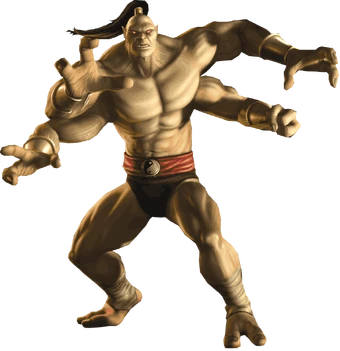
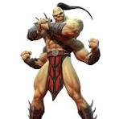
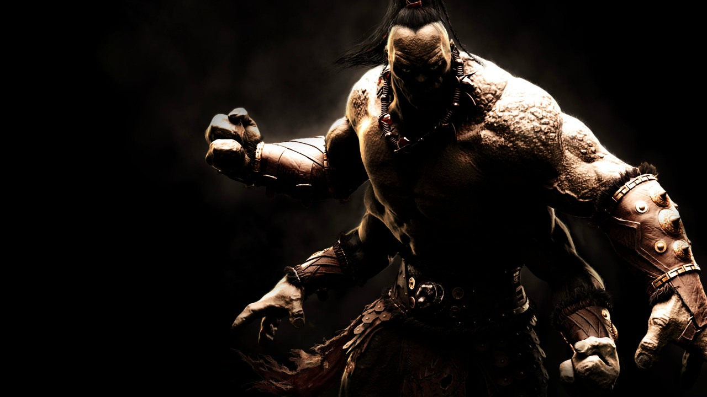

Versões:

verção 1
Essa foi uma das primeiras versões do Goro (Mortal Kombat Armageddon). Goro luta na batalha final buscando garantir a sobrevivência dos Shokan. Questiona sua lealdade a Shao Kahn, mas mantém seu estilo brutal de combate tradicional.

Verção 2
Essa foi a versão do Goro do Mortal Kombat 9. Como campeão invicto, Goro derrota guerreiros da Terra sob ordens de Shang Tsung. Aparece com visual detalhado e golpes clássicos, sendo um chefe desafiador.

verção 3
Essa foi a versão do Goro do Mortal Kombat 10. Goro retorna como DLC, afastado de Shao Kahn. Usa três variações de luta poderosas, combinando agarrões, lâminas e agressividade para reconquistar a glória dos Shokan.